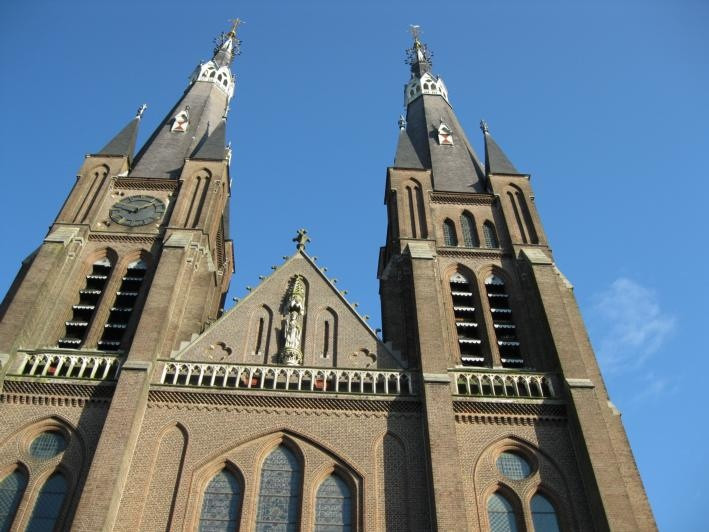

Welcome to Cuijk, a charming town located along the River Maas in the province of North Brabant.
Known for its rich history, beautiful nature, and friendly people, Cuijk offers a perfect mix of culture and relaxation.
Whether you love exploring ancient history, enjoying scenic bike rides, or tasting Dutch specialties, Cuijk has something for everyone!
1. The Saint Martins Church (Sint-Martinuskerk)
This impressive neo-Gothic church is one of the main landmarks of Cuijk.
Inside, youll find stunning stained-glass windows and a peaceful atmosphere.
The church tower offers a fantastic view over the town and the river Maas.

2. The Roman Bridge and Archaeological Park
Cuijk has deep Roman roots! Visit the site where the ancient Roman bridge once connected both sides of the Maas.
Nearby, you can explore the Archaeological Park Ceuclum, which showcases Roman artifacts and history from more than 2,000 years ago!
3. Museum Ceuclum
Located in the old church tower, this museum takes you through Cuijks history from Roman times to modern days.
You can climb the tower for a panoramic view of the town and surrounding nature.
5. The Kraaijenbergse Plassen
Just outside Cuijk lies this beautiful lake area with clear blue water.
Its ideal for swimming, sailing, paddleboarding, or simply relaxing on the beach in summer.
There are also walking and cycling routes all around the lakes.
🚲 Things to Do
Cycling & Walking Routes: Cuijk is part of several national bike trails. You can cycle through forests, farmlands, and along the Maas.
Events & Festivals: Cuijk is famous for the Four Days Marches Festivities (Vierdaagsefeesten) in July, when thousands of hikers pass through the town.
Local Markets: Visit the weekly market for local cheese, flowers, and traditional Dutch snacks.
Boat Tours: Enjoy a relaxing river cruise and see Cuijk from a new perspective.